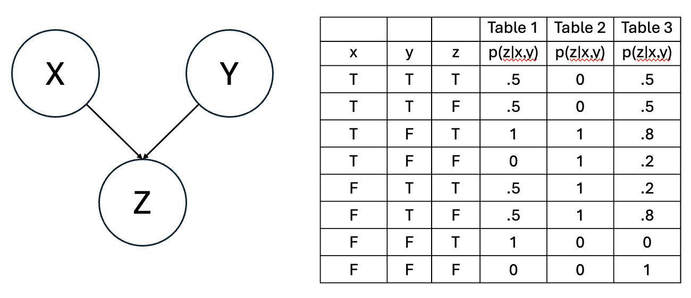
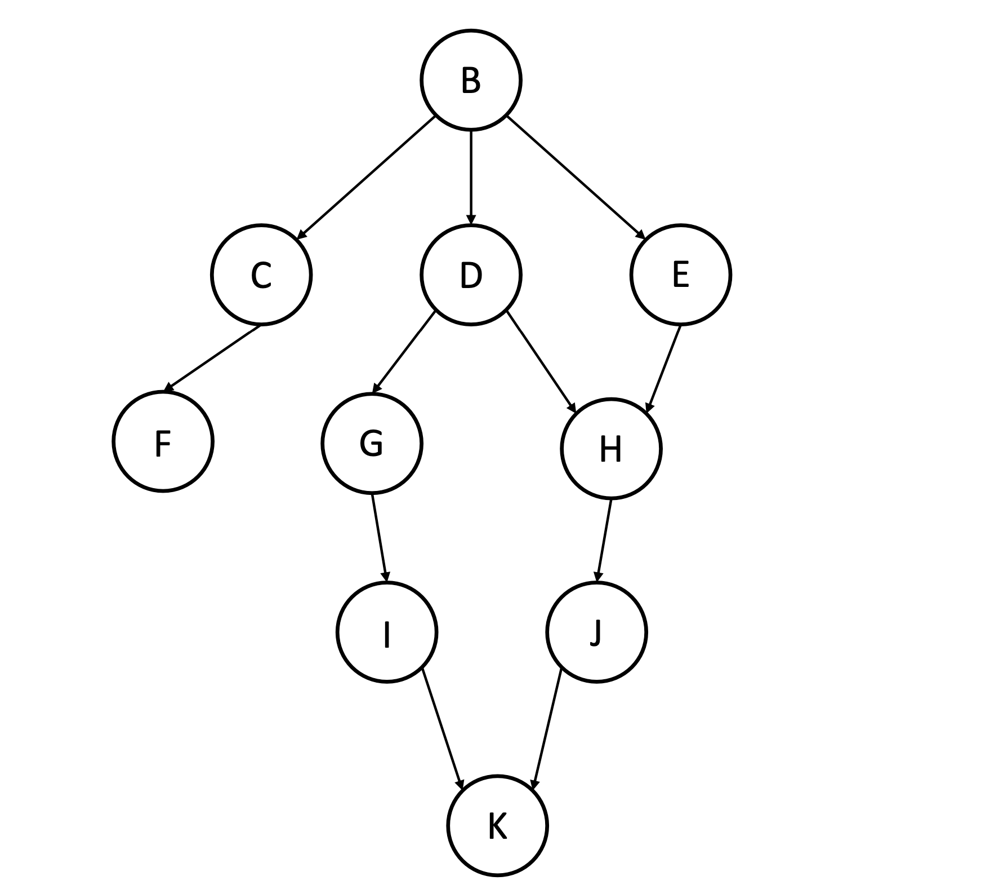

1 · Sampling
25 points · Lecture 18 (Approximate Inference: Rejection & Gibbs Sampling)
Q1 — Which CPT breaks Gibbs sampling?

Each Gibbs step picks one variable and resamples it conditioned on all other variables, transitioning state
x → x' with kernel k(x' | x). At equilibrium, π = Kπ has a unique stationary solution π = P(x₁,…,xₙ | e₁,…,eₖ) only if the Markov chain is ergodic — i.e., completely connected (irreducible) and aperiodic. L18 s.28 & s.36 highlight the sufficient condition: "Provided all Gibbs distributions are bounded away from 0 and 1 and variable selection is fair" (and mixing takes longer when CPTs are nearly deterministic).
Inspect each table for zero entries that disconnect positive-probability states into unreachable islands under single-variable updates:
- Table 1: Every
(x, y)pair has at least onezwith positive probability, so you can always changexoryone at a time. - Table 2: Only
(x=T, y=F)and(x=F, y=T)have positive entries;(T, T)and(F, F)are strictly 0 for everyz! Starting at(T, F, z), flippingxmoves to(F, F, z)(prob 0) and flippingymoves to(T, T, z)(prob 0). The chain is reducible (not completely connected) and can never cross between(T, F)and(F, T). - Table 3:
(T, T),(T, F),(F, T), and(F, F, F)are all positive and connected by single-variable steps.
x and y) and both intermediate states have probability 0, violating ergodicity (L18 s.36).q1_answer = 2.Q2 & Q3 — Prior sampling with rejection on a DAG

Prior sampling walks the DAG in topological order (
for i = 1..n: sample xᵢ ~ P(Xᵢ | parents(Xᵢ))). Rejection sampling adds an early-exit check: "If xᵢ is not consistent with evidence, reject immediately" (L18 s.16–17). Its weakness (L18 s.20): "If evidence is unlikely, rejects lots of samples; evidence not exploited as you sample" — especially severe when evidence sits at downstream leaf nodes (just like P(Shape | Color=blue) on L18 s.20 and P(Age | e) vs. P(PropertyCost | e) on L18 s.18, s.33–34).
- Q2 —
P(K | B = b):Bis the root node. It is sampled first in topological order, so mismatches are rejected immediately before touching any other node — and every accepted rollout naturally propagates the upstream evidenceB = bdownward toK. Good fit! - Q3 —
P(B | K = k):Kis a leaf at the very bottom. Every sample must simulate the entire networkB → … → Kwithout seeingK = k, then discard the whole rollout wheneverK ≠ k. Poor fit! (This is exactly why L18 introduces Likelihood Weighting and Gibbs sampling for downstream evidence.)
q2_answer = 'yes', q3_answer = 'no'.Q4 & Q5 — Markov blankets of G and D
Contrast the two independence rules on L18 s.29:
- Given its parents alone,
Xis conditionally independent of its non-descendants. - Given its Markov blanket,
Xis conditionally independent of all other nodes in the network:MB(X) = Parents(X) ∪ Children(X) ∪ Children's Parents(X)
X and the CPTs of its children Yⱼ (L18 s.31):
- For
G: Parents ={D}; Children ={I}; Other parents ofI=∅. - For
D: Parents ={B}; Children ={G, H}; Other parents ofG=∅; Other parents ofH={E}(since bothD → HandE → Hmeet at colliderH).
H — it has two incoming arrows, making E a co-parent of D (the Zⱼ nodes in L18 s.29).q4_answer = ('D', 'I'), q5_answer = ('B', 'E', 'G', 'H').2A · Conditioning warmup
5 points · 1 line of code · HMM setup
An HMM pairs an underlying first-order Markov chain over hidden states
Xₜ (in PS9: robot grid position sₜ) with noisy observations Eₜ (in PS9: zₜ). It is completely specified by three distributions:
Joint: P(X₀, …, Xₜ, E₁:ₜ) = P(X₀) ∏ₜ P(Xₜ | Xₜ₋₁) P(Eₜ | Xₜ)
P(zₜ | sₜ) on an observed reading zₜ = obs produces the likelihood factor over sₜ used in filtering and Viterbi (L19 s.31–33).
You already have condition_CPT(cpt, evidence) in the utilities cell, where evidence is a dict mapping each conditioned RV to its observed value. Simply pass {rv: 0}.
return condition_CPT(cpt, {rv: 0})2B · HMM state variable
5 points · 2 lines of code · Lecture 19 s.5, s.24–29 (Robot Localization)
In L19's Robot Localization example (Michael Pfeiffer, s.24–29), the robot knows the grid map of walls/obstacles, and its hidden state
Xₜ is a discrete finite variable ranging over all free cells in the grid.
Scan obstacle_map in row-major order (outer loop over rows r, inner loop over columns c) and collect every (r, c) tuple whose entry is 0 (free space, not obstacle 1). Wrap that list in RV(name, domain).
[(r, c) for r, row in enumerate(obstacle_map) for c, val in enumerate(row) if val == 0].RV(name, domain).2C · Transition CPT
5 points · ~8–10 lines of code · Lecture 19 s.5–7 (Transition Model & Stationarity)
Markov assumption: "future is independent of the past given the present" —
P(Xₜ₊₁ | X₀,…,Xₜ) = P(Xₜ₊₁ | Xₜ). Stationarity: the same transition CPT applies at every timestep t (just like an MDP transition model with no choice of action). Each row sₜ of the transition matrix sums to 1 over next states sₜ₊₁ (L19 s.7).
From state s_t = (prev_r, prev_c), the robot moves uniformly among its current cell and any free 4-cardinal neighbors (up, down, left, right).
st1.domain already contains only in-bounds free cells, a state (next_r, next_c) in st1.domain is reachable from (prev_r, prev_c) if and only if its Manhattan distance is at most 1:
- Allocate
table = np.zeros((st.dim, st1.dim)). - For each
i, (prev_r, prev_c)inenumerate(st.domain), settable[i, j] = 1.0whenever Manhattan distance ≤ 1. - Normalize row
i:table[i] /= table[i].sum()so each row sums to 1 (valid conditional distributionP(s_{t+1} | s_t)). - Return
CPT([st, st1], table).
st (current state) and axis 1 is st1 (next state), so table[i, :] sums to 1.2D · Observation variable
5 points · 2 lines of code · Lecture 19 s.16, s.24
"Sensor model: four bits for wall/no-wall in each direction" — in PS9, a 4-tuple
(N, E, S, W) where 1 means obstacle (or off-map) and 0 means free space, giving 2⁴ = 16 possible observations.
domain = list(itertools.product([0, 1], repeat=4)) and return RV(name, domain).2E · Observation CPT
20 points · Lecture 19 s.17–18, s.24–25 (Noisy Sensor Model)
P(Eₜ | Xₜ):Current evidence
Eₜ is conditionally independent of all other states and observations given the current state Xₜ. Just like the lighter-grey cells on L19 s.25 ("possible to get the reading, but less likely (required 1 mistake)"), each bit error reduces the likelihood by a factor of noise_prob / (1 − noise_prob).
For each state (r, c), first compute the true (noise-free) observation true_obs in exact [N, E, S, W] order:
| Direction | Delta (dr, dc) | Value |
|---|---|---|
| North (N) | (-1, 0) | 1 if off-map, else obstacle_map[r-1][c] |
| East (E) | (0, +1) | 1 if off-map, else obstacle_map[r][c+1] |
| South (S) | (+1, 0) | 1 if off-map, else obstacle_map[r+1][c] |
| West (W) | (0, -1) | 1 if off-map, else obstacle_map[r][c-1] |
Each of the 4 sensor bits flips independently with probability p = noise_prob. If an observation obs disagrees with true_obs in k positions (Hamming distance k), then:
0.0 ** 0 == 1.0, so the formula handles noise_prob = 0.0 cleanly without any special case: k = 0 gives 1.0, and any k > 0 gives 0.0.
flips = sum(o != t for o, t in zip(obs, true_obs)).[(-1, 0), (0, 1), (1, 0), (0, -1)] is [N, E, S, W]. Swapping E and W or N and S is the most common bug!2F · Viterbi decoding
20 points · Lecture 19 s.20–21, s.35–41 (Most Likely Explanation & Viterbi)
Of the four HMM inference tasks (Filtering
P(Xₜ|e₁:ₜ), Prediction P(Xₜ₊ₖ|e₁:ₜ), Smoothing P(Xₖ|e₁:ₜ), and Most Likely Explanation argmax_{x₀:ₜ} P(x₀:ₜ|e₁:ₜ)), Viterbi solves Most Likely Explanation — finding the single highest-probability path through the state trellis, where each arc xₜ₋₁ → xₜ has weight P(xₜ|xₜ₋₁)P(eₜ|xₜ) (L19 s.37):
Forward Algorithm (sum · L19 s.38)
Total probability of all paths to each state:
Viterbi Algorithm (max · L19 s.38)
Maximum probability of any path to each state:
O(|X|² T), Space O(|X| T) — exponentially faster than enumerating all O(|X|ᵀ) paths.About L19 s.39's question ("Why can't we normalize here?") & L19 s.41 (Log space): Normalizing
m₁:ₜ₊₁ changes the numerical probability value of the best path (so you lose the exact joint P(x₀:ₜ, e₁:ₜ)), but scaling every entry by the same positive constant αₜ preserves which path wins the argmax! That is why PS9 asks you to normalize messages at each step to prevent floating-point underflow, whereas production code usually works in negative log space (argmin of summed −log P, turning Viterbi into shortest-path search on the trellis, L19 s.41).
Step-by-step algorithm using the provided CPT helpers
- Initialize at
t = 0:- Condition
hmm.observation_CPTs[0]on{hmm.observation_rvs[0]: observations[0]}. - Multiply with
hmm.initial_distributionand normalize:msg = normalize_CPT(multiply_CPTs([hmm.initial_distribution, obs0])) - Initialize an empty list
backpointers = [](Option 1 on L19 s.40: "Store the parent xₜ when computing m₁:ₜ₊₁").
- Condition
- Forward pass for
t = 1, …, T − 1:- Condition
hmm.observation_CPTs[t]on{hmm.observation_rvs[t]: observations[t]}to getobs_t. - Multiply the previous message, the transition CPT, and the conditioned observation CPT:
joint = multiply_CPTs([msg, hmm.transition_CPTs[t - 1], obs_t])Now
jointis a 2-variable CPT over{S_{t-1}, S_t}. - Record the best predecessor for each value of
S_t:backpointers.append(argmax_CPT(joint, rv=hmm.state_rvs[t - 1])) - Maximize out
S_{t-1}and normalize to prevent underflow:msg = normalize_CPT(max_CPT(joint, rv=hmm.state_rvs[t - 1]))
- Condition
- Backtrack from
T − 1down to0:- Pick the best final state:
best_state = argmax_CPT(msg)[0](noteargmax_CPT(msg)returns a 1-tuple whenrv=None). - Loop
tfromT - 2down to0, looking upbest_state = backpointers[t].get_by_rvs({hmm.state_rvs[t + 1]: best_state})and appending it. - Reverse the collected list so it runs from
t = 0toT − 1and return it.
- Pick the best final state:
backpointers[t] stores the mapping from S_{t+1} back to the maximizing S_t (for t = 0, …, T-2).argmax_CPT(msg)[0] at the end — argmax_CPT with rv=None always returns a tuple of length len(cpt.rvs).3A · Adversarial Bayes net for rejection sampling
7 points · AI-enabled · Lecture 18 s.12, s.16–17, s.20
Prior sampling draws complete assignments from the exact joint
S_PS(x₁,…,xₙ) = ∏ᵢ P(xᵢ | Parents(Xᵢ)) = P(x₁,…,xₙ) (L18 s.12). Rejection sampling keeps only samples matching E = e, so its acceptance rate is exactly the joint likelihood P(E = e) — even if every individual evidence variable Eᵢ has a high marginal probability P(Eᵢ = eᵢ) ≥ 0.5!
We want a small binary Bayes net (≤ 10 variables, every CPT entry in [0.05, 0.95]) and evidence on ≤ 3 variables such that:
- Every evidence variable is individually likely:
P(E_i = e_i) ≥ 0.5. - The joint evidence is very unlikely:
P(E = e) ≤ 0.005(so ≤ 80 of 8,000 samples accepted).
Why naive designs fall short — and how to fix it
With only two negatively correlated variables E1 → E2, the best you can do with CPT entries in [0.05, 0.95] is P(E1=1, E2=1) = 0.5 × 0.05 = 0.025 — still 5× too large!
With three evidence variables E1, E2, E3, we can stack two 0.05-scale conditional penalties by combining:
- Strong anti-correlation between
E1andE2:P(E1 = 1) = 0.51(marginally > 0.5).P(E2 = 1 | E1 = 0) = 0.95,P(E2 = 1 | E1 = 1) = 0.07.- Marginal:
P(E2 = 1) = 0.49(0.95) + 0.51(0.07) = 0.5012 > 0.5. - Joint so far:
P(E1 = 1, E2 = 1) = 0.51 × 0.07 = 0.0357.
- A noisy NAND gate
(E1, E2) → E3:P(E3 = 1 | E1 = 1, E2 = 1) = 0.05; for all other three pairs of(E1, E2),P(E3 = 1 | E1, E2) = 0.95.- Marginal:
P(E3 = 1) = (1 − 0.0357)(0.95) + 0.0357(0.05) = 0.91787 ≫ 0.5. - Joint of all three:
P(E1=1, E2=1, E3=1) = 0.51 × 0.07 × 0.05 = 0.001785 ≤ 0.005
Out of 8,000 forward samples, only ~14 samples are expected to be accepted (~0.18%, well below the 80-sample / 1% ceiling).
principles_of_autonomy/notebook_tests/pset_9.py does not include test_12_rejection_adversary (that test runs on Gradescope). ProblemSet09_Gibbs_HMMs_complete.ipynb includes a local verification cell right after test_12 that checks all 5 exact conditions and runs 8,000 forward samples.
CPT([E1, E2, E3], table)), so table[..., :] sums to 1 along the last axis.0.5 (e.g., 0.51, 0.5012, 0.91787) avoids any floating-point boundary issues with ≥ 0.5.3B · Explaining your Bayes net
3 points · NOT AI-enabled — write your own explanation
A clear, complete explanation should hit three points:
- Graph structure: Name the variables and edges you used (e.g.,
E1 → E2and(E1, E2) → E3, or an anti-correlated chainE1 → E2 → E3). - Why each marginal is high: Explain why each individual evidence event happens at least half the time when you average over its parents.
- Why the joint is tiny: Show how the chain rule multiplies multiple low conditional probabilities together (
P(E1=1) · P(E2=1 | E1=1) · P(E3=1 | E1=1, E2=1)), causing rejection sampling to discard >99.8% of samples.